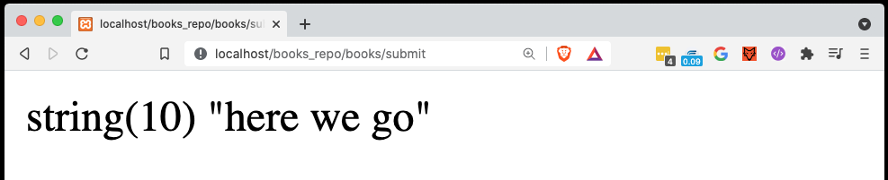
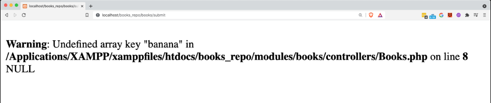
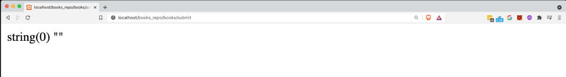

If you've been following along then you will have already used Trongate's in-built post() method. Now, let's take a little time out and explore precisely how this method works. For those of you who prefer videos, here's everything you need to know:
[youtube]{
"headline": "Video Tutorial",
"info": "In this video, we'll take a closer look at how Trongate's post() method works.",
"videoId":"rJdObk7S5GU"}
[/youtube]
For those who prefer written docs, let's take a moment to compare pure PHP with Trongate's post() method.
Let's assume that a user has submitted a form with a field called 'title'. In pure PHP we can fetch the posted title value by accessing a special kind of variable, in PHP, called a superglobal. The syntax for fetching a posted 'title' field, in pure PHP, would be:
$title = $_POST["title"];
$title = $_POST["title"];
var_dump($title);If a user then submitted a title of 'here we go', the following message would be sent to the screen:

No surprises. So, let's take a closer look at how Trongate's post() method works.
Let's repeat the exercise above, only this time we'll use Trongate's post() method, instead of pure PHP.
$title = post("title);
var_dump($title);With this being the case, you'd be forgiven for thinking that PHP's $_POST superglobal and Trongate's post() method did precisely the same thing. However, the key differences between these two things are revealed when we check for values that have not been posted.
For example, let's use pure PHP again. This time, we'll check for a posted value of 'banana'.
$banana = $_POST["banana"];
var_dump($banana);
However, if we test for the posted 'banana' field using Trongate's post() method, we get a completely different result:
$banana = post("banana");
var_dump($banana);
This difference is subtle. However, it's something that we can take advantage of when we're building forms using Trongate. In the next page you'll see how.
When you invoke Trongate's post method, you have the option of adding a second argument - a boolean of true.
Here's an example:
$title = post("title", true);